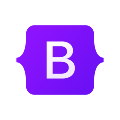
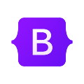

Saverio Santonocito
Full Stack Web Developer
Ciao, sono Saverio, Junior Web Developer.
Dopo aver acquisito le basi teoriche dell'informatica all'Università di Catania, sto perfezionando la mia
formazione pratica presso l'ITS Steve Jobs Academy. Qui lavoro su progetti concreti, padroneggiando le
tecnologie più attuali. Unisco dedizione e curiosità a un approccio pragmatico al problem solving. Cerco un
ambiente stimolante dove poter crescere e portare valore.
Il mio stack tecnologico
Front-end


 

Back-end
Others


Creative Background
Fin da piccolo coltivo una forte passione per la fotografia e il video, settori in cui ho maturato anche esperienza professionale. Questo background arricchisce il mio approccio allo sviluppo web, permettendomi di curare con particolare attenzione l'estetica e la composizione dei progetti.
Filmcan Movies
Faccio parte del collettivo Filmcan Movies, creativi dedicati alla produzione di cortometraggi e videoclip.